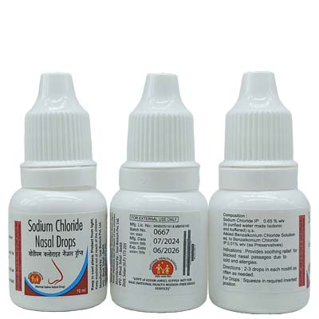
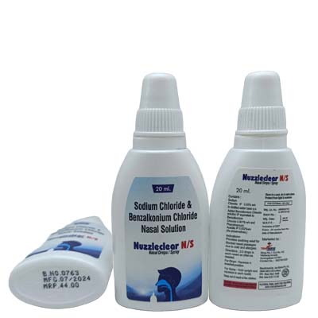

×

Saar Biotech Pvt. Ltd. is a distinguished WHO-GMP certified pharmaceutical manufacturing
company
in Baddi,
Chandigarh, renowned for its dedication to quality and innovation. Since 2005, we have been
at
the
forefront of the industry, operating from our state-of-the-art facility in Baddi, with a central
office
in Chandigarh.
Specializing in third-party contract manufacturing, we partner with over 1700 clients to
deliver
a wide
range of pharmaceutical products, including Suspensions,Syrups, Ointments, Roll Ons, covering
various
therapeutic segments. Our extensive experience and advanced technology make us a trusted
choice
for
companies seeking reliable manufacturing solutions.
At Saar Biotech, quality and service are our top priorities. Our stringent quality
standards ensure each
product meets regulatory requirements and exceeds customer expectations. We are committed to
providing
the best service and product quality in the industry.
Join us at Saar Biotech, where health and quality converge. Experience the difference of partnering
with
a leader in pharmaceutical excellence. Quote Now to start your journey with us.
Sodium chloride, also known as salt, common salt, table salt or halite, is an ionic compound
with the chemical formula NaCl, representing a 1:1 ratio of sodium and chloride ions. Sodium
chloride is the primary salt in seawater and in the extracellular fluid of many multicellular
organisms.
Benzalkonium chloride, also known alkyldimethylbenzylammonium chloride , is a type of
cationic surfactant. It is an organic salt classified as a quaternary ammonium compound. It has
three main categories of use: as a biocide, a cationic surfactant, and as a phase transfer
agent.
Benzalkonium is a quaternary ammonium compound used as a biocide, a cationic surfactant, and as a
phase transfer agent . It is more commonly contained in consumer products in its salt form,
benzalkonium chloride . This salt is used in a great variety of international pharmaceutical
products such as eye, ear, and nasal drops or sprays as an excipient ingredient serving as an
antimicrobial preservative ,it is an active antimicrobial agent
Temporarily relieves symptoms associated with sinusitis, cold, flu or allergies for the treatment of inflammatory skin conditions such as severe eczema, dermatitis, psoriasis and rash.
Sodium chloride — major electrolytes of the fluid compartment outside of cells (i.e., extracellular) — work together to control extracellular volume and blood pressure. Disturbances in sodium concentrations in the extracellular fluid are associated with disorders of water balance. Benzalkonium chloride: not entirely elucidated, the bactericidal action of benzalkonium chloride is believed to be due to the disruption of intermolecular interactions. Such disruption can cause the dissociation of cellular membrane lipid bilayers of bacteria, resulting in compromised cellular permeability control and the leakage of important cellular contents, a variety of critical intermolecular interactions and tertiary structures in very highly specific biochemical systems that allow bacterial agents to function normally can be readily disrupted or deactivated by cationic surfactants like benzalkonium.
Sodium chloride:Sodium the major cation of the extracellular fluid, functions primarily in the
control of water distribution, fluid balance, and osmotic pressure of body fluids. Sodium is also
associated with chloride and bicarbonate in the regulation of the acid-base equilibrium of body
fluid. Chloride, the major extracellular anion, closely follows the metabolism of sodium, and
changes in the acid-base balance of the body are reflected by changes in the chloride concentration.
Benzalkonium chloride:Benzalkonium chloride solutions are generally categorized as biocidal
agents with relative long durations of action. Their spectrum of activity has been demonstrated
against bacteria, to some viruses, fungi, and protozoa , although bacterial spores are treated as
being resistant to the agent. Finally, solutions of benzalkonium chloride are bacteriostatic or
bactericidal based on their concentration. Bacteriostatic agents act to prevent further growth of
bacterial organisms that are present while bactericidal agents function to kill bacteria that are
present . In general, the activity of the agent is not largely affected by pH, but such activity
does increase substantially at higher temperatures and prolonged exposure times.
Sodium chloride:
Absorption: of sodium in the small intestine plays an important role in the absorption of
chloride, amino acids, glucose, and water. Chloride, in the form of hydrochloric acid (HCl), is also
an important component of gastric juice, which aids the digestion and absorption of many nutrients.
The volume of distribution is 0.64 L/kg
Elimination: Substantially excreted by the kidneys.
Benzalkonium chloride:
Absorption: benzalkonium chloride absorption was evaluated in women using tampons containing
the agent. Venous blood samples were drawn 15 minutes before the tampon application and then again
at 15 min, 1 h, 3 h, and 24 h after application. Benzalkonium chloride was not detected in any of
the blood samples at any time tested. the excipients will only ever be present at the minimal levels
necessary to maintain the integrity of the product substance.
Metabolism:benzalkonium chloride is structurally a large, positively charged molecule it is
likely poorly absorbed and eliminated largely in faeces, similar to other quaternary ammonium
compounds
Elimination: Administered benzalkonium chloride is likely eliminated largely in faeces,
similar to other quaternary ammonium compounds
Though very rare but some of the reported side-effects of this include:
Disclaimer: The data uploaded is made from content already available on internet. The company holds no right of it and is not responsible for any wrong information.